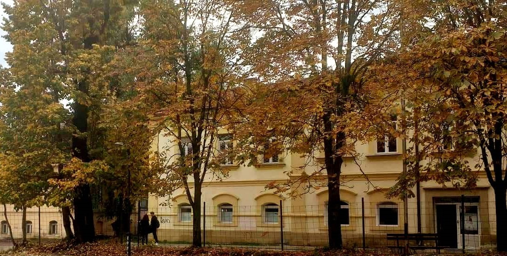

Education


- Elementary School Education
- My foundational years of education began at "Bratvo Migjeni", Tetovo, where I developed a love for learning and curiosity about the world. During my time there, I acquired essential skills in reading, writing, mathematics, and science.
- High School Education
- My high school years at "Kiril Pejchinovic" were marked by academic rigor and personal growth. Here, I pursued advanced placement courses in Mathematics, Physics, and English Literature, which prepared me for the challenges of higher education.
- University Education
- My higher education at Faculty Of Computer Science and Engineering is pivotal in shaping my professional path and intellectual pursuits. During this time at university, I will major in Computer science, where I am going to develop strong technical skills in programming.